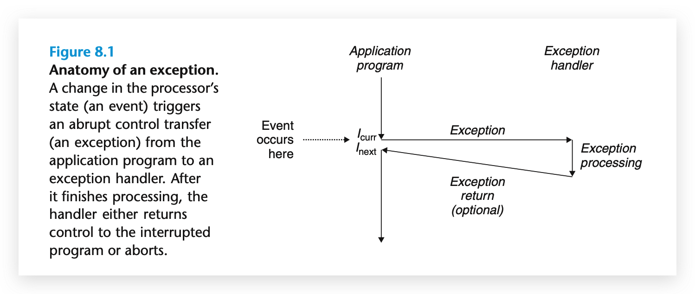
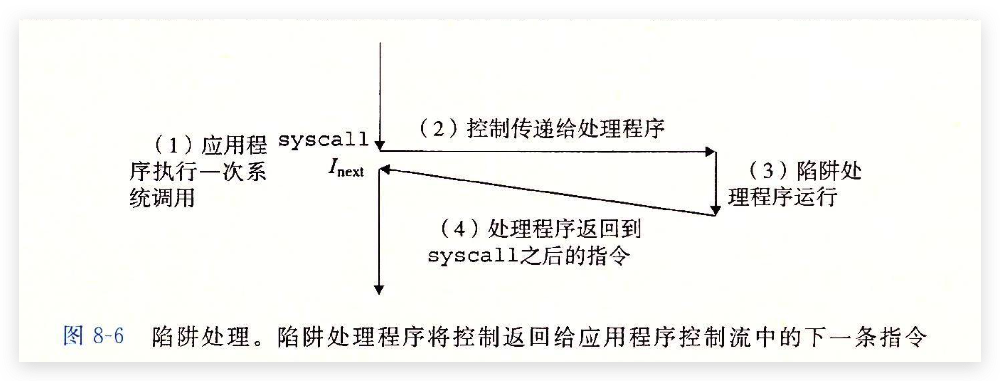

介绍
概念：
控制转移：
处理器的控制流：
系统也必须能够对系统状态的变化做出反应，这些系统状态是不被内部程序变量捕获的，而且也不一定要和程序的执行相关
- 一个硬件家里器定期产生信号，这个事件必须得到处理
- 包到达网络适配器后，必须存放在内存中
- 程序向磁盘请求数据，然后休眠，直到被通知说数据已就绪
- 当子进程终止时，创造这些子进程的父进程必须得到通知
现在系统通过使控制流发生突变来对这些情况做出反应。一般而言，我们把这些突变称为异常控制流（Exceptional Control Flow，ECF）。发生在系统的各个层次：
- 硬件层：硬件检测到的事件会触发控制突然转移到异常处理程序
- 操作系统层：内核通过上下文切换将控制从一个用户进程转移到另一个进程
- 应用层：一个进程可以发送信号到另一个进程，而接收者会将控制突然转移到它的一个信号处理程序。一个程序可以通过回避通常的栈规则，并执行到其他函数中任意位置的非本地跳转来对错误做出返回
程序员理解ECF的好处:
- 将帮助理解重要的系统概念。ECF是操作系统用来实现I/O，进程和虚拟内存的基本机制。
- 将帮助你理解应用程序是如何与操作系统交互的。应用程序通过使用一个叫系统调用（system call）的ECF形式，向操作系统请求服务。比如，向磁盘写数据、从网络读取数据。创建一个新进程，以及终止当前进程，都是通过程序调用系统调用来实现的
- 将帮助你编写有趣的新应用程序。操作系统为应用程序提供了强大的ECF机制，用来创建新进程、等待进程终止、通知其它进程系统中的异常事件，以及检测和响应这些事件
- 将帮助理解并发。ECF是计算机系统中实现并发的基本机制。如，中断应用程序执行的异常处理程序，在时间上重叠执行的进程和线程，以及中断应用程序执行的信号处理程序
- 将帮助你理解软件异常是如何工作。像C++和Java这样的语言通过try、catch以及throw语句来提供软件异常机制。软件异常允许程序进行非本地跳转来响应错误情况。非本地跳转是一种应用层ECF，在C语言中是通过setjmp和longjmp函数提供的。理解这低级函数将帮助你理解高级软件异常如何得以实现
将学习到应用是如何与操作系统交互的：
- 异常：位于硬件和操作系统交界的部分
- 系统调用：应用程序提供到操作系统的入口点的异常
- 进程和信号：位于应用和操作系统交界之处
- 非本地转跳：这是ECF的一种应用层形式
异常
异常是异常控制流的一种形式，一部分是由硬件实现，一部分由操作系统实现。
异常exception就是控制流中的突变，用来响应处理器状态中的某些变化
基本思想：
当处理器状态中发生一个重要的变量时，处理器正在执行某个当前指令curr。在处理器中，状态被编码为不同的位和信号。状态变化称为事件event。事件可能和当前指令的执行直接相关。比如，发生虚拟内存缺页、算术溢出，或者一条指令试图除以零。另一方面，事件也可能和当前指令的执行没有关系。比如，一个系统定时器产生信号或者一个I/O请求完成。

在任何情况下，当处理器检测到有事件发生时，它就会通过一张叫做异常表的跳转表，进行一个间接过程调用，到一个专门设计用来处理这类事件的操作系统子程序（异常处理程序exception handler）。当异常处理程序完成处理后，根据引起异常的事件的类型，会发生以下3种情况：
- 处理程序将控制返回给当前指令curr，即当事件发生时正在执行的指令
- 处理程序将控制返回给next，如果没有发生异常将会执行的下一条指令
- 处理程序终止被中断的程序
异常处理
异常处理需要硬件和软件紧密合作。系统中可能的每种类型的异常都分配了一个唯一的非负整数的异常号（exception number）。其中一些号码是由处理器的设计者分配的（比如，被零除、缺页、内存访问违例、断点以及算术溢出），其他号码是由操作系统内核的设计者分配的（比如系统调用和来自外部I/O设备的信号）
异常的类型
分类：
| 类别 | 原因 | 异步/同步 | 返回行为 |
|---|---|---|---|
| 中断interrupt | 来自I/O设备的信号 | 异步 | 总是返回到下一条指令 |
| 陷阱trap | 有意的异常（system call） | 同步 | 问是返回到下一条指令 |
| 故障fault | 潜在可恢复的错误 | 同步 | 咋可能返回到当前指令 |
| 终止abort | 不可恢复的错误 | 同步 | 不会返回 |
中断interrupt：
陷阱trap：
是一种有意的异常。最重要的用途是：在用户程序和内核之间提供一个像过程一样的接口，叫做系统调用

从程序员的角度看，系统调用和普通的函数调用是一样的。然而，它们的实现非常不同。
- 普通函数运行在用户模式中，用户模式限制了函数可以执行的指令类型，而且它们只能访问与调用函数相同的栈
- 系统调用运行在内核模式中，内核模式允许系统调用执行特权指令，并访问定义在内核中的栈